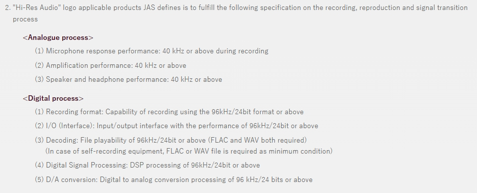
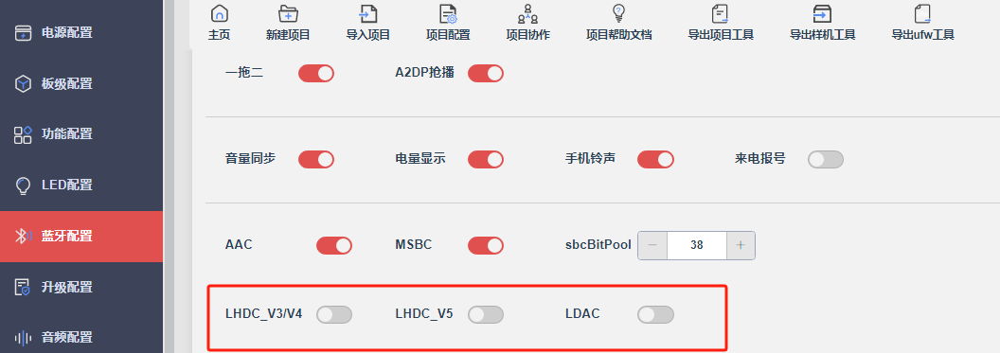
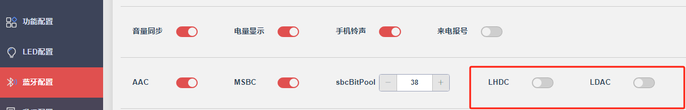
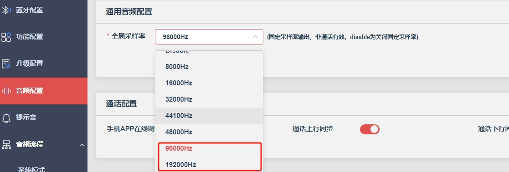
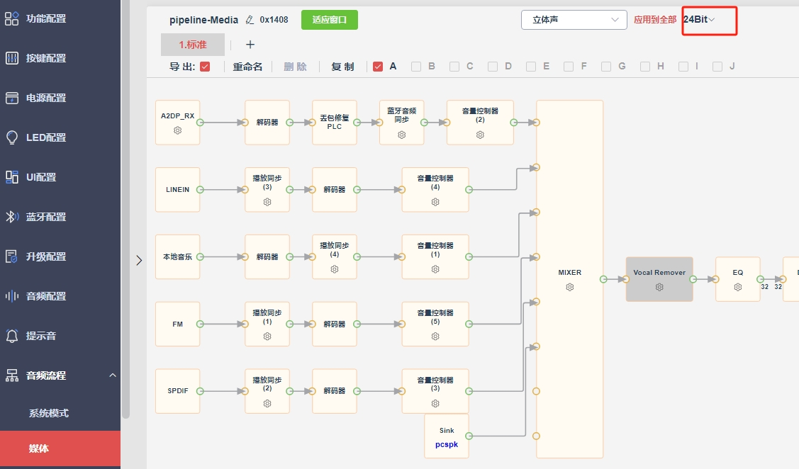

12.13.1. Hi-Res Audio通用
12.13.1.1. Hi-Res支持列表
Note
如果特殊说明，LHDC支持V3（3.0），V4（4.0）和V5（5.0），如有系列因为资源受限，不支持其中某个版本，会在以下列表备注中说明
LHDC V3/V4：最高位宽采样率 24bit/96kHz
LHDC V5：最高位宽采样率 24bit/192kHz
LDAC：最高位宽采样率 24bit/96kHz，不支持192kHz采样率
系列 |
LDAC |
LHDC |
LHDC |
USB Audio |
Linein |
备注 |
|---|---|---|---|---|---|---|
JL700N |
√ |
× |
× |
√ |
√ |
DAC最高采样率96kHz |
JL701N |
√ |
√ |
√ |
√ |
√ |
DAC最高采样率96kHz |
JL703N |
√ |
√ |
√ |
√ |
√ |
DAC最高采样率96kHz |
JL708N |
√ |
√ |
√ |
√ |
√ |
DAC最高采样率192kHz |
12.13.1.2. Hi-Res介绍
Hi-Res Audio的定义，具体见JAS官网：Definition of Hi-Res Audio。基本要求就是24bit/96kHz，摘取官网部分内容如下： 
12.13.1.3. Hi-Res配置
（1）使能配置
目前支持Hi-Res认证的codec格式有LHDC和LDAC，使能配置如下 
应用方案根据实际需求，使能对应的codec格式
理论上，LHDC_V3/V4、LHDC_V5和LDAC支持同时使能，但是不同平台由于资源不同，全部使能，并不一定够资源。所以这点需要根据具体的平台资源和方案复杂度而定
备注：有些SDK版本LHDC配置没有区分版本，即对应LHDC V3/V4使能控制，如下配置示例： 
（2）采样率配置
根据选用的编解码格式（LHDC V3/V4、LHDC V5还是LDAC），以及本文档开头列举的不同平台支持的采样率，选择对应的全局采样率

（3）位宽配置
Hi-Res位宽配置24bit

12.13.1.4. Hi-Res试用限制
12.13.1.4.1. LDAC试用限制
LDAC格式默认支持10min试听使用，超时自动静音。如果需要使用正式版本，请阅读 《LDAC认证流程》
注：早期版本不支持试听使用，所以使用早期SDK版本想试听，可以用最新的解码库替换使用
12.13.1.4.2. LHDC试用限制
LHDC格式默认支持10min试听使用，超时自动静音。如果需要使用正式版本，请阅读 《LHDC认证流程》
注：早期的部分版本仅支持2min试听，为正常现象。后续版本已经统一支持10min试听